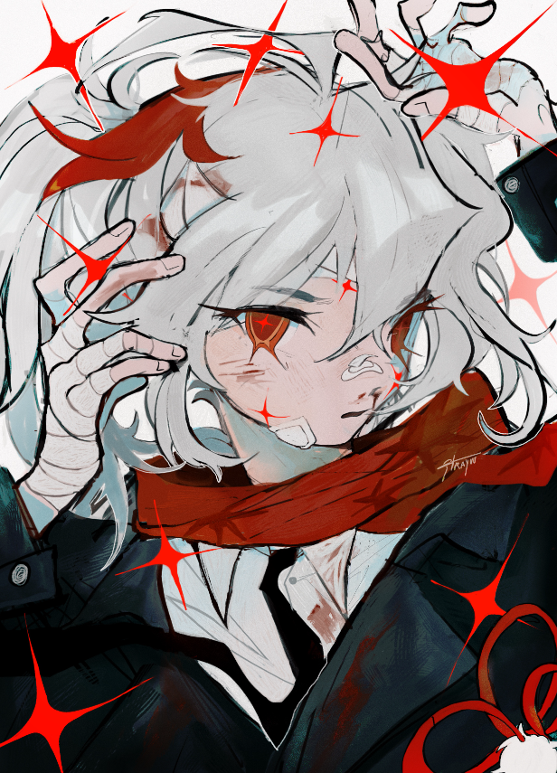

And where they came from!
As an artist, I have worked with colors for a long long time. Some of my inspirations for my favorite pallets comes from gaming, some from cartoons and anime, and some from other artists. Here are my personal favorite color pallets from all my years of consuming artistic medias.
Strayuu

Strayuu is an artist named Ekendra, who works as a hoyocreator. They make sketchy, loose digital drawings and have worked for genshin impact and hoyo to create offical art. They are an animation student based in Spain, working on getting a graduate degree! I have followed Strayuu since October of last year and have really fallen in love with their artstyle. They are inspired by a lot of things that also inspire me, like genshin impact, evangellion, and mob physco. Here is there linktree, I really encourage you support them or check out their work! Its genuinely my favorite, I really love their loose style and the deeper, less saturated colors they use. Here is Strayuu's link tree!